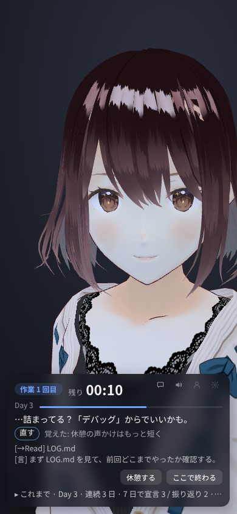

隣の席で AI が作業している、
集中のためのデスクトップアプリ。
画面の隅で AI が自分の作業をしていて、ときどき独り言を言います。その隣で自分の作業をして、25 分たつと休憩。「そっちどう？」と声がかかります。
この AI を、アプリの中では「ペルソナ」と呼んでいます。
ダウンロード
macOS（Apple シリコン）・Windows・Linux

一日の流れ
-
宣言する
「そっちは今日なにやる？」に、今日やることを一言で答えます。
-
隣で作業が始まる
ペルソナが自分の作業を始めます。こちらも自分の作業をします。ペルソナは読んだり書いたり試したりしながら、ときどき独り言を言います。
-
区切りで休憩
25 分で休憩に入ります。休憩中は、入力欄からペルソナと短く話せます。
-
振り返る
終わるときに「どこまでいった？」と聞かれます。宣言どおりに進んだかと、集中の度合いをボタンで答えます。
ペルソナは何をしているのか
始めるときに、ペルソナの作業を選びます。見せかけの動きではなく、本物の作業の出来事（読んだファイル、打ったコマンド、落ちたテスト）が、独り言と仕草になります。
- 自分のプロジェクト
- ペルソナが自分の作業場所で、自分のアプリを毎日少しずつ作ります。最初は読書記録アプリ「ほんだな」です。
- 録画を流す
- 前にした自分の作業を、そのときの間隔で流します。AI は考えないので、利用枠も費用も使いません。
- 見守る
- 別に回している Claude Code の作業を、ペルソナの作業として見せます。
- 手伝う
- 手元のリポジトリの作業を一部任せます。元のリポジトリには書かず、複製の中で作業します。

入れる
自分の OS のファイルをダウンロードして入れ、tonari を起動します。
版の一覧は Releases にあります。
用意するもの
- 考えるのに使う AI。初めて起動したときの案内で「tonari に入れてもらう」を押すと、tonari が OpenCode を入れます（約 60MB）。無料のモデルもあります。Claude Code にログインしていれば、そのまま使えます。
- 声（任意）。ペルソナは AivisSpeech の声で話します。初めて起動したときの「はじめに、声の準備」で「声を入れる」を押すと、tonari が入れます（約 1.8GB）。入れなければ字幕だけになります。
初めて開くとき
インストーラは署名していないので、初めて開くときに OS の警告が出ます。
- macOS:「システム設定 → プライバシーとセキュリティ」の「このまま開く」を押します。
- Windows:「詳細情報」から「実行」を押します。
- Linux: Ubuntu 24.04 などで AppImage が起動しないときは .deb を使います。
細かい使い方と設定は README にあります。
見ないもの、しないこと
隣にいるためのアプリなので、あなたを見張るものにはしていません。
- 画面の内容やキー入力の中身は見ません。あなたの様子として使うのは「最後に入力してから何秒たったか」だけです。
- ペルソナが書き込むのは自分の作業場所だけで、あなたのファイルには書かないようにしています。
- 「見守る」では、Claude が書いたコミットの件名とブランチ名だけを独り言の材料にします。ファイルの中身は読みません。
- 記録（宣言、集中の度合い、独り言）はあなたの PC の中にだけ残ります。tonari がどこかのサーバーに送ることはありません。
- ランキングも、連続記録の催促もありません。

スマホにも移れます
使っている途中でパネルのスマホのボタンを押すと、ペルソナとパネルはスマホのブラウザに移り、PC の窓には QR コードが出ます。同じ Wi-Fi のスマホで読めば、その日の作業はそのまま続きます。ssh 先の開発マシンで動かして、手元のブラウザで開くこともできます。